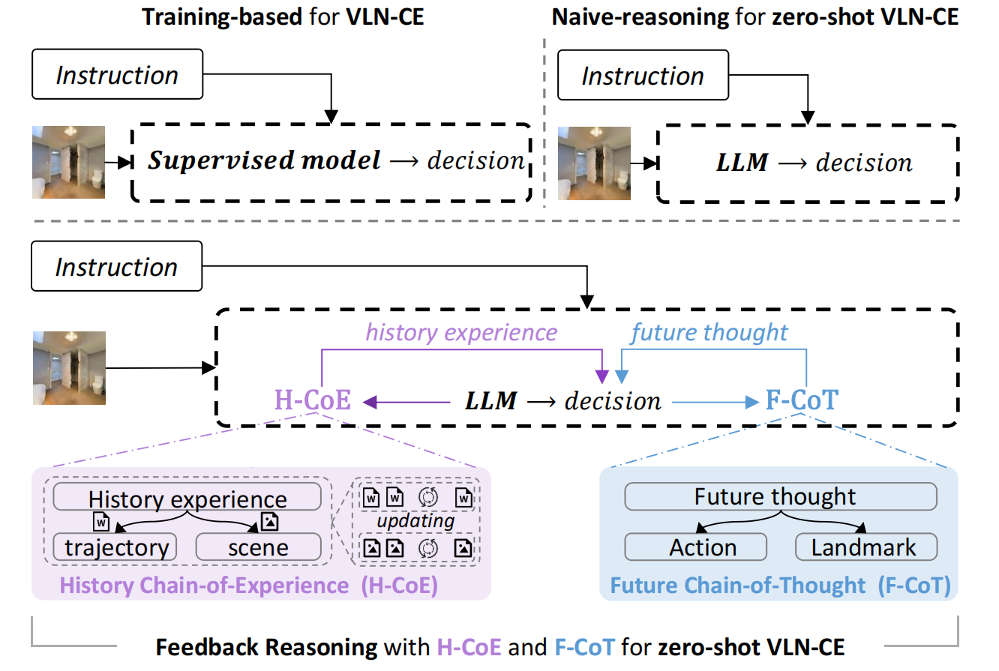
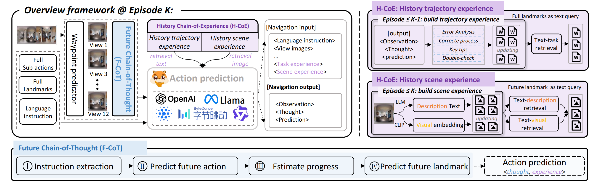

CVPR 2026

Figure 1. Comparison of navigation paradigms. Previous methods typically focused on the task of VLN-CE under training-based paradigms, suffering from poor zero-shot generalization in unseen scenes[cite: 43]. Recent methods address this by using LLMs but incur naive reasoning without feedback, leading to poor decision-making[cite: 44]. Our EvoNav improves LLM-based agents' decision-making by the Feedback Reasoning of history experience and future thought via History Chain-of-Experience (H-CoE) and Future Chain-of-Thought (F-CoT)[cite: 45].

Figure 2. Overview framework of EvoNav. Given panoramic RGB and depth images, candidate waypoint images are first identified[cite: 139]. These images are then analyzed by the F-CoT, which predicts next-step actions and landmarks as thoughts to guide navigation progress[cite: 140]. Simultaneously, H-CoE retrieves trajectory- and scene-related experience from a dynamic experience bank[cite: 141]. Finally, retrieved experiences and future thoughts are fused within the action prediction module to support robust decision-making[cite: 142].
| Method | NE ↓ | OSR ↑ | SR ↑ | SPL ↑ |
|---|---|---|---|---|
| Open-Nav (Gemini-2.5-pro) | 6.77 | 44 | 24 | 13.39 |
| EvoNav (Gemini-2.5-pro) (Ours) | 5.04 | 51 | 43 | 37.77 |
Experimental results demonstrate that EvoNav achieves state-of-the-art results across all metrics on the R2R-CE benchmark[cite: 287].
| Method | NE ↓ | nDTW ↑ | OSR ↑ | SR ↑ | SPL ↑ |
|---|---|---|---|---|---|
| Open-Nav (Gemini-2.5-pro) | 7.28 | 49.51 | 30 | 23 | 19.90 |
| EvoNav (Gemini-2.5-pro) (Ours) | 5.04 | 62.38 | 51 | 43 | 37.77 |
EvoNav also achieves SOTA results on NavRAG-CE, which requires a deeper understanding of complex user demands[cite: 288].